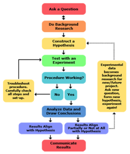
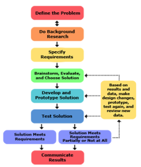

\00 Icon\Burnside Icon - white RGB.png)
Burnside High School Science and Technology Club
BackAre you interested in working on a personal project this year? Want to use the science labs or tech resources on your own inquiry? At the end of the year you will then be eligible to enter the Various Science and Technology competitions. Come to P12 Week B to get advice and start to link up with teachers who can help you.

14 day camp exploring tertiary-level science, mathematics and technology. Apply as a year 12 student.

A camp in Wellington for young scientists and technologists in December.

The scientific method is a method you can use to come up with a hypothesis and test it.
The method is used by people who need to solve problems and make solutions, it could also be very useful for students that want to do something, but they dont know what.
It is one of the most widely used method among people in scientific areas due to it being very effective and semi easy to follow.


The engineering method is a method used to solve a problem, be aware that it isn't much help in coming up with an idea.
This method is used by people to solve problems in a effective, systematic way. its more for technology projects then science ones but it can still be useful.
Once again it is one of the most widely used processes because it is highly effective and provides a structured approach to problem-solving